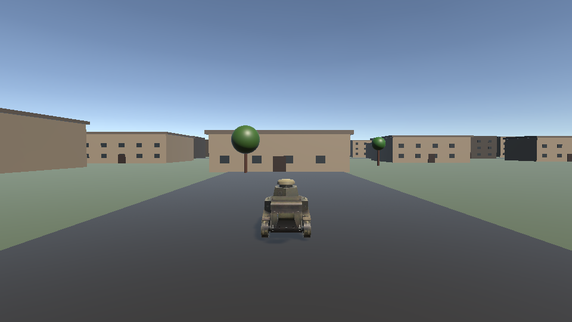
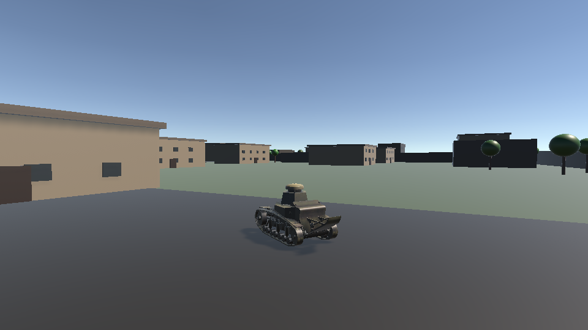
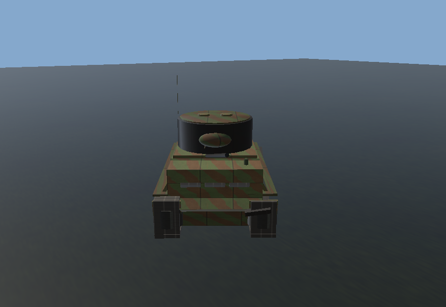
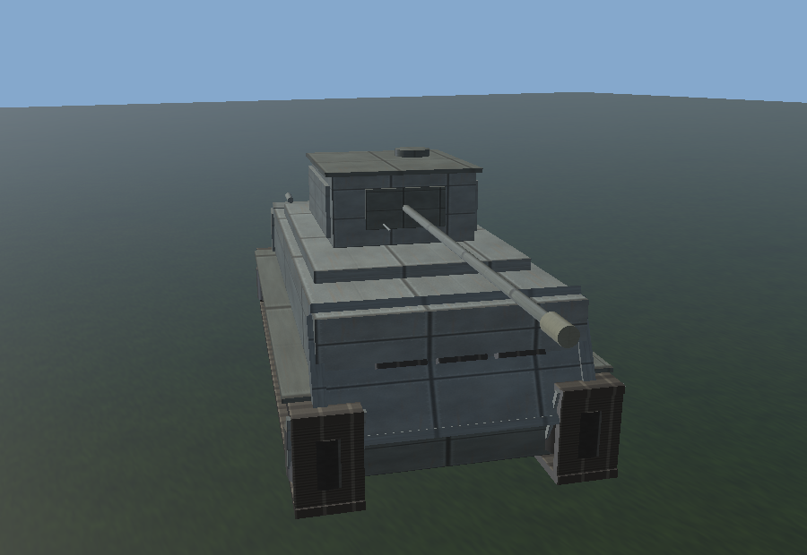
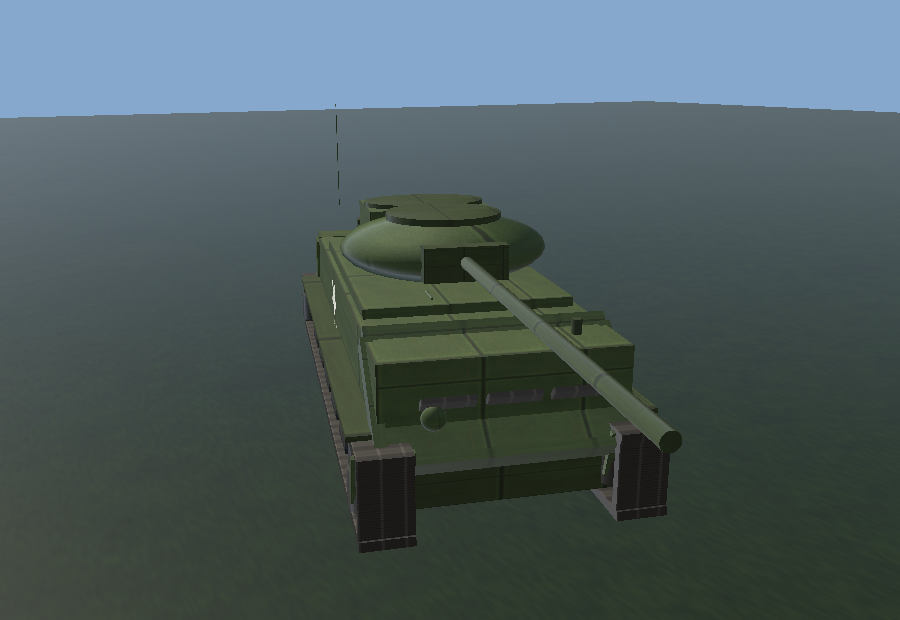
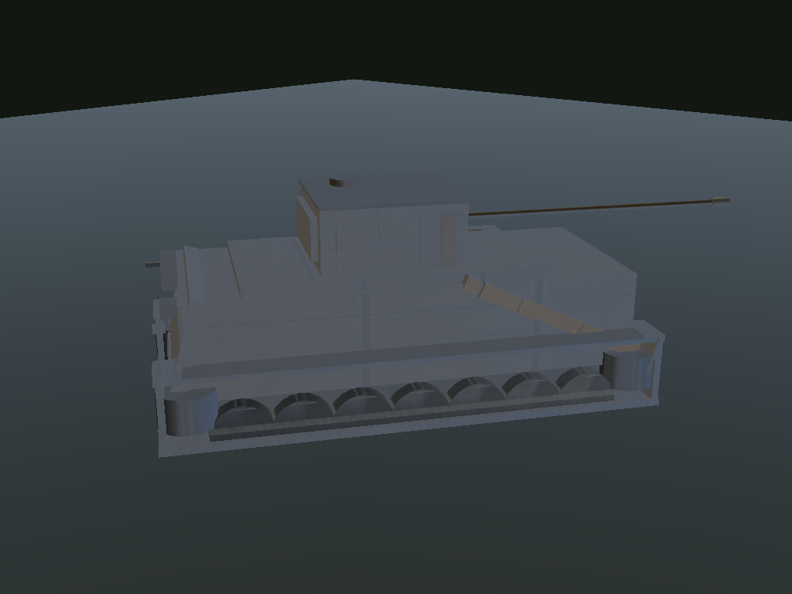
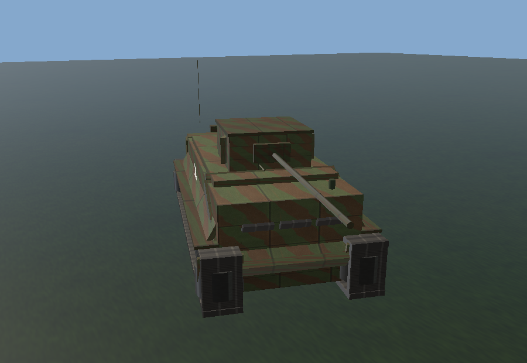
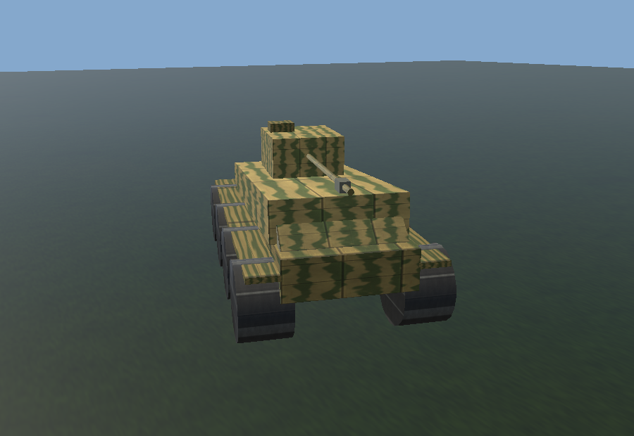
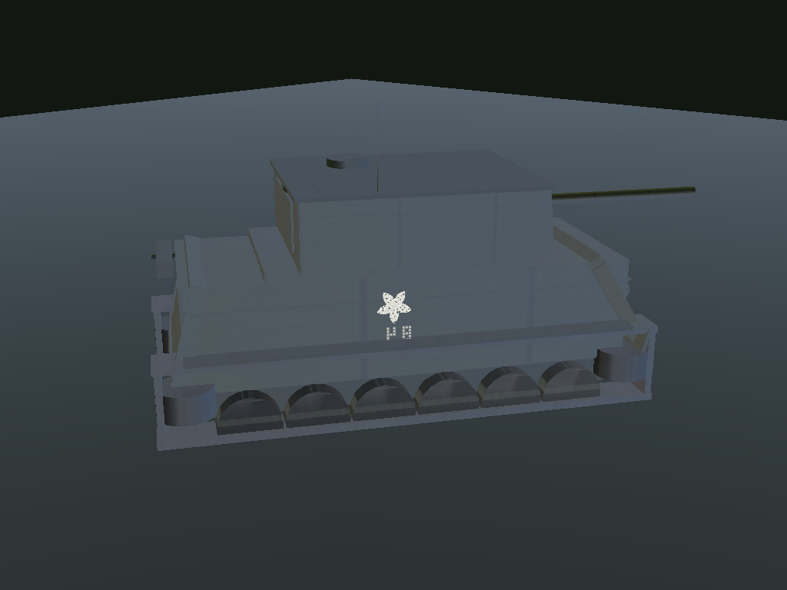
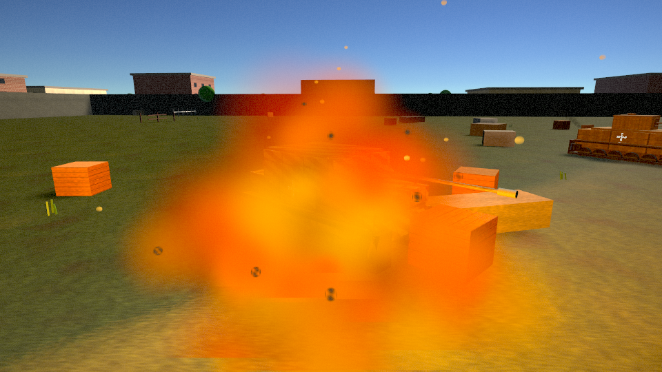

Модульные повреждения
12 модулей и общая прочность корпуса: ствол, затвор, башня, двигатель, трансмиссия, гусеницы, боеукладка. У каждого свой хитбокс и своя броня.
Введите шестизначный пароль. Буквы — заглавные.
Доступ только по прямой ссылке. Сайт не индексируется поисковиками.
Наполовину про модули и экипаж, наполовину про прочность корпуса. Попадание бьёт по конкретному узлу, а не только снимает полоску. 48 машин СССР и Германии, включая самолёты, пехоту и зенитные САУ. Бой продолжается, даже когда твой танк уже горит.
У машины есть общая прочность корпуса, но попадание в гусеницу срывает трак, в моторный отсек — вызывает пожар. Ствол можно разорвать, башню заклинить, а экипаж — контузить. После боя машина не «восстанавливается сама»: её чинят.
12 модулей и общая прочность корпуса: ствол, затвор, башня, двигатель, трансмиссия, гусеницы, боеукладка. У каждого свой хитбокс и своя броня.
F — ремонт. Пока чинишься, машина стоит. Союзник рядом ускоряет работу вдвое и получает +50 Gold.
Двигатель горит. Клавиша 6 — огнетушитель, всего два заряда. Кончились — танк догорает до конца.
Механик, наводчик, командир, заряжающий. Контузия выключает человека на 5 секунд, ранение — навсегда.
Боты берут точку, чинятся, тушат пожары, помогают союзникам и целятся в модули. Игрок для них — приоритетная цель.
Уничтожь две машины, нажми Q и вылети на купленном истребителе. Бомбы сбрасываются вручную, а танк на земле остаётся уязвимым.
Отдельный режим с видом от первого и третьего лица: бег, присед, РПГ с перезарядкой, один вражеский бот и полноценные итоги боя.
Прямое подключение по IP или через интернет. Хост авторитетен: попадания, броня и модули считаются на его стороне. Сеть включается в настройках; пока комната открыта, ваш ПК работает сервером. Три режима: танки, пехота и авиация.










От МС-1 и Pz.Kpfw. I до ИС-3, Tiger II и Maus, плюс ранние самолёты и пехота. Характеристики берутся прямо из игровых данных.
Рекорды считаются автоматически по текущим характеристикам техники: скорость, масса, броня, орудие и экипаж.
| Категория | Машина | Нация | Значение |
|---|
Бесплатная сборка для Windows. Распакуй архив и запусти
SteelTracers.exe. Установка не нужна.
Если Windows показывает предупреждение SmartScreen, нажми «Подробнее» → «Выполнить всё равно».
Игра на Mac — через PlayOnMac или Whisky, без установки Unity.
Нативного .app пока нет: Unity собирает macOS-версию только на Mac.
Зато актуальная сборка 1.5.12 запускается на Mac через Wine-обёртку
PlayOnMac 4.4.4. Скачай игру (тот же архив, что для Windows)
и установщик PlayOnMac — инструкция ниже.
Игра — это Windows-сборка, она запускается через PlayOnMac. Отдельно скачай
PlayOnMac 4.4.4.
На Apple Silicon сначала поставь Rosetta 2:
softwareupdate --install-rosetta --agree-to-license.
Старый готовый архив со встроенным PlayOnMac (версия игры 1.3.0): SteelTracers-Windows.zip (Wine) · читать инструкцию без скачивания
Полная версия с логами, портами и удалением — в README-MAC.txt внутри архива.
softwareupdate --install-rosetta --agree-to-license.
PlayOnMac_4.4.4.dmg, перетащи PlayOnMac в «Программы».
Первый запуск — правый клик → «Открыть». Если macOS пишет «повреждён»:
sudo xattr -rd com.apple.quarantine /Applications/PlayOnMac.app.
SteelTracers →
64-bit → выбери SteelTracers/SteelTracers.exe.
Дойди до меню игры, закрой её и создай ярлык с именем SteelTracers.
-screen-width 1280 -screen-height 720 -screen-fullscreen 0 -force-d3d11.~/Library/PlayOnMac/wineprefix/SteelTracers/drive_c/users/<пользователь>/AppData/LocalLow/DefaultCompany/SteelTracers/Player.logСеть 1×1: TCP 47778 и UDP 47777. Хост создаёт комнату, второй игрок вводит его IP. В macOS разреши входящие соединения для PlayOnMac. Порты можно пробросить на роутере, но обычно UPnP справляется сам.
Проверка безопасности: Microsoft Defender (29.10.2026) не нашёл угроз в игре и
PlayOnMac_4.4.4.dmg. SHA-256 установщика:
7BE6BEE16D8DF3E0CAA5DF6F647AC437A5C4D77ED7FA1B11A1DB02EDF9C66522.
PlayOnMac может вызывать ложные срабатывания антивирусов — это официальный установщик
с repository.playonmac.com.
На Apple Silicon альтернатива — Whisky:
создай бутылку Windows 10 64-bit, включи DXVK и запусти SteelTracers.exe.
APK для телефонов и планшетов Android 8.0+ (ARM64 и ARMv7). Установка вручную: разреши «Неизвестные источники» и открой скачанный APK.
На Android заранее включены минимальные настройки графики и разрешение 1280×720. Перед входом игра покажет предупреждение. В меню есть переключатель «мобильная / как на ПК»: на мощном телефоне можно включить тени, сглаживание, пост-эффекты и траву уровня ПК.
Чувствительность прицела настраивается отдельным ползунком в меню и по умолчанию сильно снижена, чтобы танк не разворачивался от лёгкого касания.
Управление: левый джойстик — ход, свайп справа — обзор, крупные кнопки — огонь, пулемёт, прицел, ремонт, экипаж, огнетушитель и снаряды.
С клавиатурой: в настройках включи «Убрать кнопки» — джойстик и кнопки исчезнут, останется управление как на ПК: WASD, стрелки или мышь — наведение, Enter/ЛКМ — огонь, Space — пулемёт, RightShift/C — прицел, F/G/1/2/3/6 — ремонт, экипаж, снаряды и огнетушитель. Кнопки также скрываются автоматически, когда в бою нажата игровая клавиша. Вернуть интерфейс: три пальца по экрану.
Мультиплеер: включи «Сетевая игра» в настройках, затем в меню боя выбери «С игроками». Хост создаёт комнату, второй игрок находит её в списке (одна Wi-Fi сеть) или подключается по IP/коду. В лобби выбирается режим: танки, пехота или авиация. Для игры через интернет нужен проброс портов TCP 47778 / UDP 47777 или VPN вроде ZeroTier/Radmin.
Скачать Steel Tracers для AndroidРазмер APK ~188 МБ: универсальная сборка для ARM64 и ARMv7. Внутри новое меню, экипажи, трофеи, усилители, сетевые пехота и авиация и облачные профили.
Планшет пишет «пакет повреждён» или «недействителен»? Удалите старую версию игры и установите этот APK заново — он подходит и для 64-битных, и для 32-битных устройств. Для большинства планшетов Honor подходит ARM64.
Сайт обновляется вместе с игрой: техника, характеристики и ссылка на сборку.